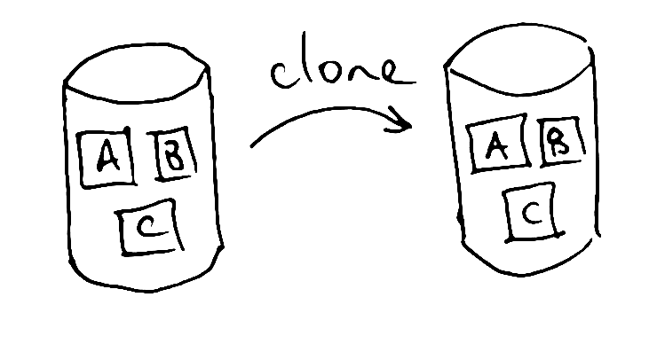

What's the difference between Mercurial and git?
We're occasionally asked why we chose to use Mercurial in our code hosting site, and what difference there is between Mercurial and git.
The two certainly have plenty in common, as modern distributed version-control systems with cross-platform support.
Mercurial has a somewhat simpler interface. Git has an extra “layer of indirection” when committing, through the index (or staging area). Git is widely used for sharing and modifying open source software, via the commercial website github; arguably the social nature of that site and its range of online code management tools are the biggest motivations for many people to learn and use git.
But what probably makes the biggest difference in daily use is the branching model, and what it means about the way clones and pulls are handled.
With Mercurial, every clone of a repository is effectively equivalent. Sure, some clones might have new material in them and others might not be up-to-date, but the default behaviour when cloning, pushing, and pulling amongst repositories is to synchronise everything so that the target repository looks, as far as possible, identical to the source. Similarly, if you then pull someone else's work into your Mercurial repository, you'll normally see all of it dropped directly into your main branch. You don't have to update, merge, or use it, but it's there anyway, right in your face.
Cloning a repository in git produces something a bit different—a repository in which changes are accorded different status depending on where they came from. Although all of the changes in the original repository are retained, branches in the original are re-labelled as “remote branches” and hidden from view by default, and a new branch is created for local work. If you then fetch further changes from someone else's repository, those changes will arrive in a separate branch which you're free to ignore or merge at your leisure. (Branches are pervasive in git; it's not possible to collaborate using it without them.)
The Mercurial way has the advantage of making it very easy to back up and synchronise changes between different copies of your work, particularly if you are working alone or in a small group of people whose work you trust. Knowing that all your repositories are basically equivalent (up to synchronisation state) increases confidence that you won't lose work or get confused between changes made in different working copies.
The git way has the advantage of inherently separating out different streams of work as far as possible, so that you can collaborate with potentially large numbers of people distantly without having to place too much trust in them. It also makes it easier to work at second-hand if you are one of those distant collaborators. It gives advanced users more options for how to deal with bungled commits, and it is technically the more flexible and powerful model.
To sum up, then. For a new project:
- If you are working alone or in a small team, and your biggest concern is to ensure your work does not get lost, you may prefer Mercurial.
- If you are working openly and encouraging contributions from anywhere, and your concern is how to manage those cleanly without accidental breakage to your core published code, you may prefer git.
Of course, as we've emphasised elsewhere, using either of them is much better than not using any version control at all!
Read more posts about version control.